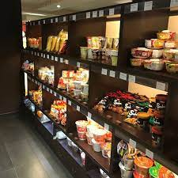
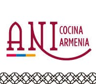

Como especialistas en alimentación oriental y expertos en un servicio personalizado a todos nuestros clientes, nuestros expositores ofrecen la mejor solución para sacar el máximo partido al producto en el punto de venta. Expositores a medida que incluyen de una manera organizada todas las novedades en alimentación oriental de nuestras mejores marcas. Una manera más llamativa y original de poner a disposición de los consumidores un producto de calidad y toda la información necesaria para su aplicación en la cocina.
|  | Oriental Market |
Dirección: Calle Sicilia 212 |
|
D08013 - Barcelona - España |
|
Contacto: (+34) 935 350 490 |
|
| Email: info@orientalmarket.es | |
| www.orientalmarket.es | |
 |
Tienda Oriental |
Dirección: Altolaguirre 2172 |
|
01431 - CABA - Bs. As.- Argentina |
|
Contacto: (+54) 11 5132-3074 |
|
|  | ANI Cocina Armenia |
Dirección: Juan José Viamonte 215 |
|
05014 - Barrio Gral. Paz - Córdoba - Argentina |
|
Contacto: (+54) 351 451-3541/3437 |
|
| Email: info@ani-cocinaarmenia.com | |
| www.ani-cocinaarmenia.com |